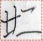
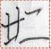

← Previous
Index
Next →
English: They live a happy/blessed life.
Chinese: 他们生活得很幸福。
Chinese (pinyin): Tāmen shēnghuó de hěn xìngfú. (also de shenghuo)
Pekzep (latin transcription): zap2 ge mok1 kait po1.
Pekzep (hanzi transcription): 彼等行善道。
Pekzep (linzklā): 


 

Analysis: